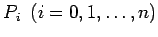
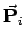

Inhalt Index DeskTop Bronstein

 Numerische Mathematik Darstellung von Kurven und Flächen mit Hilfe von Splines Bernstein-Bézier-Darstellung von Kurven und Flächen
Numerische Mathematik Darstellung von Kurven und Flächen mit Hilfe von Splines Bernstein-Bézier-Darstellung von Kurven und Flächen


Gegeben seien n+1 Eckpunkte  mit den Ortsvektoren  eines räumlichen Polygons, das in diesem Zusammenhang als Stützpolygon bezeichnet wird. Durch die Vorschrift
wird diesen Punkten eine Raumkurve, die sogenannte B-B-Kurve zugeordnet. Wegen (19.249) kann (19.252) als ,,variable Konvexkombination`` der gegebenen Punkte aufgefaßt werden. Die Raumkurve (19.252) hat folgende wichtige Eigenschaften:
Die B-B-Darstellung wird vor allem für den Entwurf von Kurven eingesetzt, da man durch die Änderung von Polygonecken den Kurvenverlauf auf sehr einfache Weise beeinflussen kann.
Häufig werden an Stelle der BERNSTEINschen Grundpolynome normalisierte B-Splines verwendet. Die zugehörigen Raumkurven heißen dann B-Spline-Kurven. Ihr Verlauf entspricht prinzipiell dem der B-B-Kurven, aber sie haben folgende Vorteile gegenüber diesen: